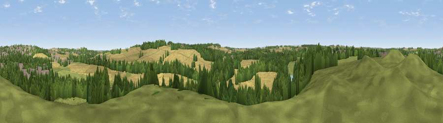

Viewpoint near South Elmsall
#41070 in England · top 85% of its area beats it · near South Elmsall · access?Where it is
The exact computed spot (SE 47375 10025). Click the marker for map links.
Public access: no public right of way or access land is recorded at this exact spot — it may be on private land. Computed from Natural England's CRoW access layer and OpenStreetMap rights of way — not the legal definitive map. Always verify locally.
The view, rendered

A 360° render of this exact spot computed from the terrain model, tree cover and land cover — summer colours, afternoon light, calibrated against photographs of famous viewpoints. Real trees, hedges and buildings will differ in detail.
The panorama
Grey silhouette: terrain skyline in each direction (720 bearings, Earth curvature and refraction included). Dashed green: skyline with trees (+15 m) and buildings (+8 m) as obstacles. Blue strip: how far the ground is visible on each bearing.
Where the view opens
Wedge length = distance to the farthest visible ground on that bearing (vegetation-aware). Rings at 10, 25 and 50 km.
What fills the view
40% cropland · 26% woodland · 25% grassland · 9% built-up
Angular shares of the visible panorama (visual magnitude), not map area. Landscape diversity 0.56 (0–1 Shannon).
Key numbers
More beautiful places nearby
The staircase of upgrades: each row has a higher view potential than everything closer. Driving times are estimates from straight-line distance, calibrated against real road routing — check an actual route before setting out.
| Place | Direction | Drive | Score |
|---|---|---|---|
| Viewpoint near Hampole | ENE · 3 km | ~7 min | 48.9 |
| Viewpoint near Great Houghton | WSW · 5 km | ~10 min | 52.5 |
| Viewpoint near Grimethorpe | W · 5 km | ~11 min | 63.8 |
| Hoyland Lowe | SW · 14 km | ~26 min | 64.5 |
| Viewpoint near Woolley | W · 16 km | ~28 min | 66.2 |
| Viewpoint near Maltby | SSE · 19 km | ~32 min | 70.7 |
| Viewpoint near Whitley | SW · 21 km | ~35 min | 72.1 |
| Viewpoint near Wharncliffe Side | SW · 21 km | ~35 min | 75.0 |
53.58468, -1.28586 · source: screening · position refined by local search. Computed location — check access rights before visiting.